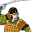

Enables


Spawned Garrisons
- Units:
Basic Building Statistics (can be modified by difficulty level, arts, skills, traits and retainers)
- Cost: 300
- +4 to repression in this province
- Consumes food: 1
- Recruitment capacity (units in training): +1
Description
A reminder of lordly might is more than mere walls and towers.
A fort is a basic defence against attackers, and can be garrisoned with troops to slow down and hinder any enemy incursions. Even the smallest castle can be difficult to take, and leaving the garrison unmolested and behind an advancing army is not always an option. A fort is also a symbol to the locals to remind them of their overlord's power, and it can be used as a recruiting centre for some basic types of warrior. Historically, the castles of the early Sengoku Jidai were a good deal less majestic than what is now considered to be the classical Japanese castle. The first castles were practical structures, made of wood and without multi-storeyed towers and stone walls. They were used for the defence and surveillance of the surrounding region, where the grand later buildings were also lordly mansions and seats of government, often with entire towns built around them. Early castles were located on rivers, at ports and other strategic points, and cunningly took full advantage of the natural landscape: mountainous positions were favoured, and nearby streams were diverted and dammed as moats. It was common for the defenders to not lurk behind their walls when attacked: the defenders would, more often than not, sally forth to meet the enemy rather than rely on the walls.